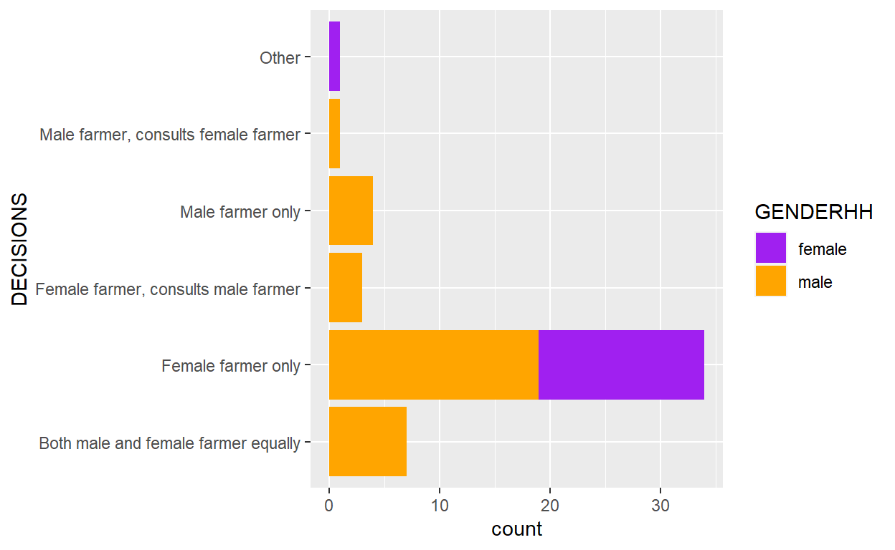

Colours
Lets start by adding colours to the scatter plot we were just making. We have two different ways we can apply colours to a scatterplot - either:
a) make all of the points the same colour. b) Or we can set the points to be different colours based on a column in the data.
Option a) involves changing the colour through the geometry; option b) will require us to change colours through adding an aesthetic.
Let’s look at option a) first, and make all of our points red:
ggplot(data = BeanSurvey, aes(x = AGEHH,y=LANDAREA)) +
geom_point(colour="red")If we are just adding colours superficially to make our plot look nicer, this is one way to achieve it. We could use the the R colour chart to pick out a nice shade to help our points look good.
But we can add to the information being displayed by setting the colour of points to vary by a third column - for example gender of the household head.
ggplot(data = BeanSurvey, aes(x = AGEHH,y=LANDAREA,colour=GENDERHH)) +
geom_point()In this case we can see colours being automatically assigned to each of the unique values of the column we have mapping to the colour aesthetic. This will help us to now visualise the relationship between three variables from our data on the same plot.
However there are lots of ways to get this wrong, and in particular through mixing up these two different ways of assigning the colours. In the video above I illustrate this example of what happens if you specify a colour name in the aesthetic or specify a variable in the geometry. You can run examples of this below - make sure you don’t fall into these traps!
ggplot(data = BeanSurvey, aes(x = AGEHH,y=LANDAREA,colour="blue")) +
geom_point()ggplot(data = BeanSurvey, aes(x = AGEHH,y=LANDAREA)) +
geom_point(colour=GENDERHH)Remember that both of those examples are wrong, but only one of them gives an error!
Fill
When dealing with bar charts or boxplots in particular, although some other geometries as well, there are actually two different colour assignments that you need to be aware of. The colour aesthetic still works, as does setting the colour within the geometry.
ggplot(data = BeanSurvey, aes(y = AGEHH,x=GENDERHH,colour=GENDERHH)) +
geom_boxplot()ggplot(data =BeanSurvey, aes(y = AGEHH,x=GENDERHH,colour=GENDERHH)) +
geom_boxplot(colour="blue")But you will notice that this affects the points and lines of the box, but not the internal colour. So to change that attribute we would use fill instead of colour.
ggplot(data = BeanSurvey, aes(y = AGEHH,x=GENDERHH,fill=GENDERHH)) +
geom_boxplot()Similarly we could set a single colour for all boxes by using setting the fill colour within the geom_boxplot line of code.
QUESTION: In the chunk below write the R code to produce a histogram of land area from the BeanSurvey dataset, and have it shaded in green. Then investigate what happens within geom_histogram if you map a categorical variable, like Gender of household head, to either the colour or fill aesthetic
ggplot(data=BeanSurvey,aes(x=LANDAREA))+
geom_histogram(fill="green")
#second plot - setting fill = GENDERHH gives us overlapping histograms with different colours. Can be useful for comparing distributions, but a little confusing, because the genders are stacked on top of each other so comparing is not easy. We will learn how to separate this out a little bit later in the course.
ggplot(data=BeanSurvey,aes(x=LANDAREA,fill=GENDERHH))+
geom_histogram()Scales
Lets now think about the variable containing the quantity of beans harvested in the long rains season, and see how it varies by village.
ggplot(data = BeanSurvey, aes(y = BEANSHARVESTED_LR,x=GENDERHH,fill=GENDERHH)) +
geom_boxplot()Scales are useful to apply to modify the properties of how the aesthetics get turned into the plot. Scales modify the aesthetics. All scale functions are of the same generic format scale_aesthetic_modifier.
This yield variable looks extremely skewed. There are a small number of farmers harvesting a very large quantity of beans. So most of our plot area is blank and it is hard to see the extent of the gdner difference! This is the sort of case where we might want to apply a log scale for harvest. Using the log10 scale modifier to the y axis then works like this.
ggplot(data = BeanSurvey, aes(y = BEANSHARVESTED_LR,x=GENDERHH,fill=GENDERHH)) +
geom_boxplot()+
scale_y_log10()This really helps us to see the differences by gender which weren’t clear before, and makes the graph look much better due to a more appropriate use of space! However, there is a trade-off here - because there were many farmers with a total of 0 beans harvested, then doing the log transformation forces these to be removed from the plot. This is because log(0) cannot be calculated. This means the plot only shows those farmers who did harvest more than 0 beans. This is why we see an error message telling us “Removed 21 rows containing non-finite values” - log(0) is the non-finite value this is referring to.
This could still be a useful plot to interpret, but we always need to be careful when using a log transformation in case there are zero values in our variable. A better option here may be to calculate the beans harvested per hectare, which should make results more comparable. We will learn how to do that in a later module of this course when we come to learn about data manipulation with dplyr.
A similar principle of scale applies to colours as well - so if we want to set the colours for our gender groups instead of relying on the R defaults this would also be through an additional call to scale. There is a number of different modifiers available for fill or colour aesthetics - a simple one would be the manual modifier which lets us specify exactly what colours to use.
ggplot(data = BeanSurvey, aes(y = BEANSHARVESTED_LR,x=GENDERHH,fill=GENDERHH)) +
geom_boxplot()+
scale_y_log10()+
scale_fill_manual(values=c("purple","yellow"))Here you need to make sure that:
a) you have the correct number of colours, 1 for each group. Remember to use the c() function to combine the colours together, and to use a comma between each colour
b) the names are all colours in R and that you have quotation marks correctly placed around all of them.
R has some strange colours built in by name.
So for example this is possible:
ggplot(data = BeanSurvey, aes(y = BEANSHARVESTED_LR,x=GENDERHH,fill=GENDERHH)) +
geom_boxplot()+
scale_y_log10()+
scale_fill_manual(values=c("chartreuse","blanchedalmond"))But this will give us some transparent boxes since the colours are not recognised by R.
ggplot(data = BeanSurvey, aes(y = BEANSHARVESTED_LR,x=GENDERHH,fill=GENDERHH)) +
geom_boxplot()+
scale_y_log10()+
scale_fill_manual(values=c("mediumred","paleblue"))As a reminder, the R colour chart can help here.
One of the other useful modifiers for colours is brewer. Instead of picking out individual colours for each value you pick out a pre-existing colour palette. You can see the colour palettes available here. The palette names in R correspond to the ‘scheme’ names on that website which you can see in the URL when you choose a palette.
As mentioned in the video, I really like the “Dark2” palette for its bold colours, which are clearly distinguishable. Although a lot of colour choice comes down to specific applications or personal preference.
ggplot(data = BeanSurvey, aes(y = BEANSHARVESTED_LR,x=GENDERHH,fill=GENDERHH)) +
geom_boxplot()+
scale_y_log10()+
scale_fill_brewer(palette="Dark2")**QUESTION: Using everything you have learnt so far: in the code chunk below make an (informative) chart showing the relationship between the quantity of beans harvested in the long rains season, BEANSHARVESTED_LR and the type of labour used, LABOR
ggplot(data=X,aes(y=Y,x=X))+
geom_something()Layers
ggplot2 graphs can have make graphs with multiple geometries layered on top of each other, providing the aesthetics for those geometries are the same.
Let’s go back to the scatter plot we made earlier about age of the household head and land area
ggplot(data = BeanSurvey, aes(x = AGEHH,y=LANDAREA)) +
geom_point()We couldn’t really decide earlier if there was a relationship between these two variables - it didn’t really seem like there was. But we can add a “line of best fit” onto the plot using geom_smooth - by default this fits a smoothing function onto the plot, which will help us to determine whether or not there is a relationship, and whether this relationship is likely to be linear, or more complicated.
+ at the end of each layer.
ggplot(data = BeanSurvey, aes(x = AGEHH,y=LANDAREA)) +
geom_point()+
geom_smooth()The shaded area around the line represents a 95% confidence interval around the trend being plotted. The ordering of the layers determines what will appear on top; look at the difference if we reverse the order of geom_point() and geom_smooth().
ggplot(data = BeanSurvey, aes(x = AGEHH,y=LANDAREA)) +
geom_smooth()+
geom_point()If you are struggling to spot the difference - look closely at where the points intersect with the line.
This example of layering works because geom_smooth and geom_point both have the same required aesthetics - a numeric variable mapped to x and a numeric variable mapped to y. If we tried to add, for example, a boxplot on top then we would receive a slightly strange looking plot, and a warning message since the aesthetics for boxplot are not completely compatible.
ggplot(data = BeanSurvey, aes(x = AGEHH,y=LANDAREA))+
geom_point()+
geom_boxplot()Because the x aesthetic is optional for geom_boxplot this example chooses to ignore the incompatible variable (AgeHH) being plotted on that axis and just draws a single boxplot. This is probably not going to give us a useful graph!
If we tried to layer geom_bar then we would get an error, since the aesthetics needed for geom_bar would be incompatible with the aesthetics we have for geom_point.
ggplot(data = BeanSurvey, aes(x = AGEHH,y=LANDAREA))+
geom_point()+
geom_bar()Facets
We’ve seen how to add variables to a plot using aesthetics. Another way, for categorical variables, is to split your plot into facets, which are subplots that each display one subset of the data. For example, if we take the boxplots we made earlier, with BEANSHARVESTED_LR by GENDERHH, plotted on the log10 scale, we can use facet_wrap to split this plot into two panels defined by the VILLAGE variable.
ggplot(data = BeanSurvey, aes(y = BEANSHARVESTED_LR,x=GENDERHH,fill=GENDERHH)) +
geom_boxplot()+
scale_y_log10()+
scale_fill_brewer(palette="Dark2")+
facet_wrap(~VILLAGE)This plot shows us quite clearly there is a large difference in the distributions amount harvested between the two villages. And also that in Kimbugu, where harvested amounts are higher, there is quite a large difference by gender. WHereas in Lwala, where harvested bean quantities are lower, there is only a very minor difference by gender.
Be careful not to miss the ~ before VILLAGE. This is used to define a formula in R. e.g. something like “y=x” in R terms is coded as y~x. Within facet_wrap the y is implicit (it is essentially the graph specification). The ~ tells it to make different panels based on each unique value of x (in this case - gender). It’s used in many R functions, and you’ll see this appearing again later in the course.
Always consider exactly which variables would make sense in which position of your plot. Trial and error can be very helpful here, as it sometimes becomes only clear which option shows the story most clearly after comparing different options.
For example, the way we have orientated the graph above places the focus on making gender differences within each of the two villages. But it makes it a little harder to compare village differences within each gender.
QUESTION:Modify the previous code, to reverse the orientation so that VILLAGE is on the x axis, and we use facets for GENDERHH
#Remember to change the fill aesthetic as well as the x aesthetic
#I also moved gender to make up the rows and age group to make the columns, as my boxes were being squashed too much otherwise
#This does mean that the x axis labels are now illegible though!
#However the colour coding means that we can easily distinguish the parties without the x axis labels anyway
#We will learn how to remove, or modify, those x axis labels in the next section about themes
ggplot(data = BeanSurvey, aes(y =BEANSHARVESTED_LR ,x=VILLAGE,fill=VILLAGE)) +
geom_boxplot()+
scale_y_log10()+
scale_fill_brewer(palette="Dark2")+
facet_wrap(~GENDERHH)Hopefully you will see in this example that it becomes much easier to compare our villages against each other. But more difficult to compare the genders against each other.
Labels
The plot that we made, showing how bean harves has varied by gender and village is quite useful. We might now be starting to get excited about sharing our results with other people, or including this plot in a report or presentation.
ggplot(data = BeanSurvey, aes(y = BEANSHARVESTED_LR,x=GENDERHH,fill=GENDERHH)) +
geom_boxplot()+
scale_y_log10()+
scale_fill_brewer(palette="Dark2")+
facet_wrap(~VILLAGE)But, we should first start thinking about making this plot more informative. Let’s start by adding labels for our axes and providing titles.
The function labs() let’s us label different aspects of the plot. We can label any of the aesthetics that have mapped in the plot - let’s start by labelling the x and y axes.
ggplot(data = BeanSurvey, aes(y = BEANSHARVESTED_LR,x=GENDERHH,fill=GENDERHH)) +
geom_boxplot()+
scale_y_log10()+
scale_fill_brewer(palette="Dark2")+
facet_wrap(~VILLAGE)+
labs(x="Gender of Household Head",y="Beans Harvested In Long Rains (Kg)")Within this function we can write anything we like when assigning what the labels should be, as long as it is contained within quotation marks " ".
Notice in this example that the x axis has been labelled with “Gender of Household Head”, but the legend has still been labelled with “GENDERHH”. This is because we are labelling the aesthetics, not the variables themselves. And the “GENDERHH” label is associated with the fill aesthetic. So we will also need to include a label for the fill as well as for the x and y.
ggplot(data = BeanSurvey, aes(y = BEANSHARVESTED_LR,x=GENDERHH,fill=GENDERHH)) +
geom_boxplot()+
scale_y_log10()+
scale_fill_brewer(palette="Dark2")+
facet_wrap(~VILLAGE)+
labs(x="Gender of Household Head",y="Beans Harvested In Long Rains (Kg)",
fill="Gender of Household Head")There are also additional features we can label - such as the title, subtitle and caption
ggplot(data = BeanSurvey, aes(y = BEANSHARVESTED_LR,x=GENDERHH,fill=GENDERHH)) +
geom_boxplot()+
scale_y_log10()+
scale_fill_brewer(palette="Dark2")+
facet_wrap(~VILLAGE)+
labs(x="Gender of Household Head",y="Beans Harvested In Long Rains (Kg)",
fill="Gender of Household Head",
title="Boxplots showing difference in quantity of harvested beans by gender",
subtitle="Split by village",
caption="Data collected from interviews with 49 farmers conducted in May 2019")Things are starting to look good! But we may also want to make some further tweaks to the general visual appearance of certain aspects of our plot.
Themes
Themes refers to styling of the non data elements of your plot. So the label fonts, colours and sizes, the titles, and the background lines and boxes. ggplot2 has a huge number of theme options that allows you to control almost every aspect of your plot which becomes important when you want to present or publish your graphs. It’s worth knowing how to find the options you are looking for when customising the themes - there are too many different things to remember! A lot of different examples are shown through the ggplot2 site here.
For example, lets say that I want to make my x axis labels gigantic for some reason.
We need to find which argument modifies the x axis labels. If we look into the documentation we can find the argument axis.text.x.
Because this is a text component we then need to use a function element_text, which will allow to customise the appearance of this text.
The element functions exist so that we can customise the components relating to specific types of element - element_text, element_line,element_rect (for ‘rectangles’ or boxes) are the most commonly used.
Within element_text there are then lots of options we can change, but to make massive labels the one we will need to modify is size.
ggplot(data = BeanSurvey, aes(y = BEANSHARVESTED_LR,x=GENDERHH,fill=GENDERHH)) +
geom_boxplot()+
scale_y_log10()+
scale_fill_brewer(palette="Dark2")+
facet_wrap(~VILLAGE)+
labs(x="Gender of Household Head",y="Beans Harvested In Long Rains (Kg)",
fill="Gender of Household Head",
title="Boxplots showing difference in quantity of harvested beans by gender",
subtitle="Split by village",
caption="Data collected from interviews with 49 farmers conducted in May 2019")+
theme(axis.text.x = element_text(size=20))This is probably a little bit too big!
QUESTION Using some trial and error set a more sensible value for the font size. Once you have done this, now also look into the documentation to see if you can work out how to make the x axis text appear in bold
ggplot(data = BeanSurvey, aes(y = BEANSHARVESTED_LR,x=GENDERHH,fill=GENDERHH)) +
geom_boxplot()+
scale_y_log10()+
scale_fill_brewer(palette="Dark2")+
facet_wrap(~VILLAGE)+
labs(x="Gender of Household Head",y="Beans Harvested In Long Rains (Kg)",
fill="Gender of Household Head",
title="Boxplots showing difference in quantity of harvested beans by gender",
subtitle="Split by village",
caption="Data collected from interviews with 49 farmers conducted in May 2019")+
theme(axis.text.x = element_text(size=20))#face=1 is normal, face=2 is bold, face=3 is italic
ggplot(data = BeanSurvey, aes(y = BEANSHARVESTED_LR,x=GENDERHH,fill=GENDERHH)) +
geom_boxplot()+
scale_y_log10()+
scale_fill_brewer(palette="Dark2")+
facet_wrap(~VILLAGE)+
labs(x="Gender of Household Head",y="Beans Harvested In Long Rains (Kg)",
fill="Gender of Household Head",
title="Boxplots showing difference in quantity of harvested beans by gender",
subtitle="Split by village",
caption="Data collected from interviews with 49 farmers conducted in May 2019")+
theme(axis.text.x = element_text(size=6,face = 2))It is worth getting comfortable with looking into the documentation for how to modify various aspects of these plots, and to find the different options available for each element type. Unless you have the world’s best memory it will be almost impossible to remember every single possible option here!
element_blank is also worth knowing about, as this removes elements completely. So for example, if we do not want any x axis labels at all we can set axis.text.x to be an element_blank
ggplot(data = BeanSurvey, aes(y = BEANSHARVESTED_LR,x=GENDERHH,fill=GENDERHH)) +
geom_boxplot()+
scale_y_log10()+
scale_fill_brewer(palette="Dark2")+
facet_wrap(~VILLAGE)+
labs(x="Gender of Household Head",y="Beans Harvested In Long Rains (Kg)",
fill="Gender of Household Head",
title="Boxplots showing difference in quantity of harvested beans by gender",
subtitle="Split by village",
caption="Data collected from interviews with 49 farmers conducted in May 2019")+
theme(axis.text.x = element_blank())Perhaps a more useful modification would be to remove the legend, which is duplicating the information we already have on the x axis. We can do this my modifying the theme element “legend.position” and set this to “none”. We could also use this same argument if we wanted the legend to be below the plot, “bottom”, above the plot (“top”), or to the left hand side (“left”).
ggplot(data = BeanSurvey, aes(y = BEANSHARVESTED_LR,x=GENDERHH,fill=GENDERHH)) +
geom_boxplot()+
scale_y_log10()+
scale_fill_brewer(palette="Dark2")+
facet_wrap(~VILLAGE)+
labs(x="Gender of Household Head",y="Beans Harvested In Long Rains (Kg)",
fill="Gender of Household Head",
title="Boxplots showing difference in quantity of harvested beans by gender",
subtitle="Split by village",
caption="Data collected from interviews with 49 farmers conducted in May 2019")+
theme(legend.position = "none")While the theme() function lets us control every possible aspect of these plots, we can also use built-in themes instead. These will make many changes all at the same time. You can see a gallery of all the built in themes here: https://ggplot2.tidyverse.org/reference/ggtheme.html
A popular choice is to use the ‘light’ theme:
ggplot(data = BeanSurvey, aes(y = BEANSHARVESTED_LR,x=GENDERHH,fill=GENDERHH)) +
geom_boxplot()+
scale_y_log10()+
scale_fill_brewer(palette="Dark2")+
facet_wrap(~VILLAGE)+
labs(x="Gender of Household Head",y="Beans Harvested In Long Rains (Kg)",
fill="Gender of Household Head",
title="Boxplots showing difference in quantity of harvested beans by gender",
subtitle="Split by village",
caption="Data collected from interviews with 49 farmers conducted in May 2019")+
theme(legend.position = "none")+
theme_light()Note that the order matters. Look - the legend has re-appeared! Setting a built in theme over-rules any previous calls to theme(). But we can still modify elements of the default theme after it has been set. So to use the light theme with the legend removed we need to change the order of the final two lines.
ggplot(data = BeanSurvey, aes(y = BEANSHARVESTED_LR,x=GENDERHH,fill=GENDERHH)) +
geom_boxplot()+
scale_y_log10()+
scale_fill_brewer(palette="Dark2")+
facet_wrap(~VILLAGE)+
labs(x="Gender of Household Head",y="Beans Harvested In Long Rains (Kg)",
fill="Gender of Household Head",
title="Boxplots showing difference in quantity of harvested beans by gender",
subtitle="Split by village",
caption="Data collected from interviews with 49 farmers conducted in May 2019")+
theme_light()+
theme(legend.position = "none")And now we are done with our plot.
We will learn more about different types of plots, and other ways of modifying plots as the course continues. But for now it is time to do some more practice!
##Exercises
Question 1: I am trying to make a histogram of the farmer’s ages with different panels for each village. Can you identify and fix the errors in my code?ggplot(BeanSurvey,aes(x=AGEHH))+
geom_hist(binwidth =5)+
facet_wrap(VILLAGE)Question 2a: I am making a barplot of decision making, by gender of the household head. Can you modify the code, so that it looks like the example below with female headed households coloured in ‘purple’ and male headed households coloured in ‘orange’

ggplot(BeanSurvey,aes(y=DECISIONS))+
geom_bar()**Question 2b: Taking the plot you created in Question 2a, now make some changes to the labels: i) remove the y axis label; ii) Change the x axis label to read “Number of Farmers”; iii) Add an informative title
Now consider how to also show how the different villages are associated with this this relationship. Try two different options: a) Make different coloured points for each village
b) Put the two villages in different panels
Consider which of these two plots shows the relationship more clearly. Take your preferred plot, and tidy up the axis labels and titles.
HHTYPE). Choose a sensible geometry to show this relationship.
LABOR variable are quite long, the text along the axis became squashed. Look into the elements which can be customised within theme and try to make these labels fit better by decreasing the font size or modifying the angle at which the labels are aligned to the axis
ggplot(data=BeanSurvey,aes(y=BEANSHARVESTED_LR,x=HHTYPE))+
geom_point()+
theme(axis.text.x = element_text(angle=15,size=8))Question 5: Make a plot showing the relationship between the gender of the household head (GENDERHH), village, (VILLAGE) and whether the household sells any of their beans (SELLBEANS). Include nice colours, sensible axis labels, a title, and use one of the custom built-in themes to make the plot look nice. Also consider increasing the font size for some of the labels so they can be read more clearly.
Appendix: ‘BeanSurvey’ dataset
The data we are using in this session is an extract of a survey conducted in Uganda from farmers identified as growing beans.
The dataset contains an extract of 50 responses to 23 of the survey questions, and has been imported to R as a data frame called BeanSurvey.
A summary of the columns in the dataset is below.
| Column | Description |
|---|---|
| ID | Farmer ID |
| VILLAGE | Village name |
| HHTYPE | Household composition |
| GENDERHH | Gender of Household Head |
| AGEHH | Age of Household Head |
| OCCUHH | Occupation of Household Head |
| ADULTS | Number of Adults within the household |
| CHILDREN | Number of Children (<18) within the household |
| MATOKE | Do they grow matoke? |
| MAIZE | Do they grow maize? |
| BEANS | Do they grow beans? |
| BANANA | Do they grow banana? |
| CASSAVA | Do they grow cassava? |
| COFFEE | Do they grow coffee? |
| LANDAREA | Land area of farm (acres) |
| LABOR | Labor usage |
| INTERCROP | Intercrops with beans |
| DECISIONS | Household decision responsibility |
| SELLBEANS | Do they grow beans for sale? |
| BEANSPLANTED_LR | Quantity of beans planted in long rain season |
| BEANSPLANTED_SR | Quantity of beans planted in short rain season |
| BEANSHARVESTED_LR | Quantity of beans harvested in long rain season |
| BEANSHARVESTED_SR | Quantity of beans harvested in short rain season |
Spend some time looking through the exploring the full dataset embedded below, to familiarise yourself with the columns and the type of data stored within each column. You may need to refer back to this data at times during this tutorial. Remember that R is case sensitive, so you will always have to refer to the variables in this dataset exactly as they are written in the data. There is a column in this data called “GENDERHH” but there is no column in this data called “GenderHH”.
(You can use the arrow keys on your keyboard to scroll right in case the data table does not fit entirely on your screen)
Appendix: Useful reference links
R Graphics Cookbook: http://www.cookbook-r.com/Graphs/
ggplot2 CheatSheet:https://rstudio.com/wp-content/uploads/2015/03/ggplot2-cheatsheet.pdf
R Color Chart: http://www.stat.columbia.edu/~tzheng/files/Rcolor.pdf
ggplot2 manuals (warning - technical and slightly pretentious. First line “ggplot2… embodies a deep philosophy of visualisation”): https://ggplot2.tidyverse.org/